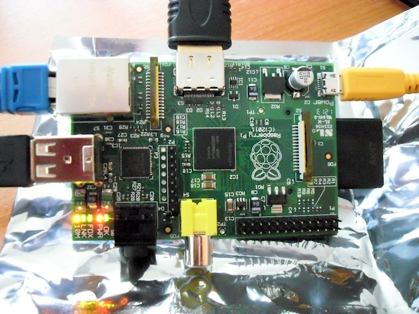

Na, nem az enyém, hanem Gábor második Raspberry Pi-ja, amit volt olyan kedves kölcsönadni, amíg megérkezik az enyém.
Feldobtam rá egy OpenELEC-et. Kinyomtam TV-re, csodás!
Na, nem az enyém, hanem Gábor második Raspberry Pi-ja, amit volt olyan kedves kölcsönadni, amíg megérkezik az enyém.
Feldobtam rá egy OpenELEC-et. Kinyomtam TV-re, csodás!
Az elmúlt hetekben háromszor kerestem meg az RS Components Magyarországot, azt illetően, hogy hol állok a várakozási sorban, de eddig válaszra sem méltattak. Végül, mivel nem tudtam jobbat, közvetlen a brit RS-hez fordultam a kérdéseimmel, ahonnan egy hét után választ is kaptam.
Kiderült, hogy a 182974. vagyok a a Raspberry Pi-ra várók sorában, valamint a rendelésemet csak március 6-án regisztrálták. Ez utóbbi igen érdekes, mivel még február 29-én adtam le a rendelést, igaz ugyan, hogy a magyar RS Componentsnél. Én megértem, hogy esetleg napokba is beletelik, hogy az egyes RS disztribútorok között átérjenek a rendelési adatok, de azt már nem értem, hogy mitől lett a február 29-éből március 6-a. Ahelyett, hogy összefésülték volna a különböző országokból beérkező rendeléseket, lehet, hogy egyszerűen összefűzték őket, ezért kerültem kb. százezerrel hátrébb a várakozási sorban?
Mindenesetre a magyar RS továbbra sem válaszol. Most azt próbálom elérni, hogy közvetlenül a brit RS-től kaphassam meg a Raspberry Pi-omat, mivel az itthoni kirendeltségnél le se szarják az ügyfelet, legalábbis nagyon ez az érzésem.
Biztos hallottatok már a Raspberry Piról. Az úgy volt, hogy első nap rendeltem egyet.
Szóval, február végén, az indulás reggelén (7-kor) ott ültem a gép előtt, és próbáltam magamnak szerezni egyet, közben chateltünk az egyik volt tanárommal, hogy ki hol tart éppen a rendelésben, melyik terjesztő oldala elérhető, illetve elérhetetlen (mindkét nagy terjesztő szerverei lehaltak). Néztük a hivatalos Twitter feedet, nyomtuk egymásnak az infókat. Igazi „hajsza” hangulata volt a dolognak.
A vége az lett, hogy Gábor a Farnellnél, én pedig az RS Componentsnél adtam le a rendelésemet. Gábor a héten megkapta az övét, nekem meg RS Components még válaszolni sem igazán hajlandó, hogy hol állok a várakozási sorban. Most ott tartok, hogy már a nemzetközi és a brit RS-nek is írtam. Egyelőre semmit sem tudok, viszont egyre inkább kezdem elveszíteni bennük a hitem. De ennyit erről, és most jöjjön a lényeg.

A képen Gábor Raspberry Pi-ja látható. Tegnap bementem a tanszékre lecsekkolni. Valóban egy bankkártya méretű, lenyűgöző kis cucc. Gyorsan be is bootoltunk egy OpenELEC-et.
Open Embedded Linux Entertainment Center, or OpenELEC for short, is a small Linux distribution built from scratch as a platform to turn your computer into a complete XBMC media center. OpenELEC is designed to make your system boot as fast as possible and the install is so easy that anyone can turn a blank PC into a media machine in less than 15 minutes.
Szépen bejött az XMBC, de már a menű szaggatott, és ~80%-on zabálta a procit. Több, mint valószínű, hogy szoftver renderinget láttunk. Szóval még nem tökéletes, közel sem. Videólejátszás közben a proci egyáltalán nem dolgozott, viszont az 1080p-s Ötödik elem teljesen darabos volt. Több, mint valószínű, hogy driver gond. :)
Aztán bebootoltuk (volna) az előre elkészített, és használatra ajánlott Debian image-et, de kernel panicba ütköztünk.

Minden jel szerint nem volt jó neki a noname SD kártya. Kicsit finnyás szegénykém, de sebaj. Másik SD kártyáról simán elindult a cucc. Igazából csak arra voltam kíváncsi, hogy van-e hozzá valami repó is, vagy egy Debian image és kész. Jelentem, repó van, ez nagyon biztató! Feltettünk hát egy VLC-t, de elindulni már nem volt hajlandó. :) Elég béta még, de nem vagyok telhetetlen, mert amint elkezdik nagy tételben gyártani és kiszállítani (remélem nekem is) a Raspberry Pi-t, úgy fog nőni a hozzájárulások száma.
Jó lett volna megnézni az Arch Linux ARM-ot, de sajnos erre már nem volt időnk. Remélem jövő héten még lesz erre alkalmam.

Maemo platform, Linux. Nagyon ütős darab GPS-szel, Wifivel meg Kékfoggal. Szép és hasznos jószág ez. Három mondatos rivjú.


Egy napja van nálam ez az eszköz, és eddig nagyon tetszik. Van multitasking meg minden, amit csak az ember akar (pl. egy rendes böngésző flashplayerrel). Egyetlen bajom, hogy nem azért van nálam, hogy szórakozzak vele, hanem azért, hogy fejlesszek rá.
Mostanság már itthon is beindult a netbook biznisz. (Állítólag) kilóra veszik az Asus EeePC-ket, MSI Windeket és az Acer Aspire one-okat különféle konfigurációkban. Alig egy éves ez az új netbook terület, melyet az Intel hódított meg magának az Atom processzorával és a kiöregedő Windows XP-vel. Hirtelen csak az Acer jut eszembe, aki a jó öreg WinXP mellett linuxos megoldást is kínál (Linpus Linux Lite) a netbookja mellé. (Szívesen letesztelném.)
Az Ubuntu feljesztését támogató Canonical Limited még tavasszal jelentette be, hogy új Ubuntu variánsokat kívánnak piacra dobni a mobil, illetve netbook piacok lefedésére. Ez volt az Ubuntu Mobile Edition, amiről azóta kiderült, hogy csak MID-ekre (Mobile Internet Device, mint pl. a Samsung Q1 Ultra) szánt verzió. Aztán jött a nyár és a tajvani Computex kiállítás, ahol Canonicalék bedobták az Ubuntu Netbook Remixet, a kifejezetten netbookokra szánt Ubuntu verziót. Ezt az „új” cuccot fogom, most közelebbről megvizsgálni, hogy az Intrepid Ibex megjelenésével hol tart a Netbook Remix.
Mivel nincs semmilyen netbooknak mondható laptopom, sem pedig szabad PC-m, ezért Virtualbox 2.0.4 virtuális gépen tesztelem a rendszert. A Netbook Remix projekt, ahogy az a Launchpad oldalukról kiderül, egyelőre ott tart, hogy egy újonnan feltelepített Ubuntu 8.04-et, vagy a most már aktuálisabb 8.10-et (Intrepid Ibex), alakítja át a netbookok kisebb kijelzőjéhez talán jobban megfelelő felhasználói felülettel, ezzel könnyítve meg a kisgép kezelését.
Ahogy az imént írtam, a tesztet Vitrualbox 2.0.4-gyel végzem, host rendszerként egy Windows XP-t használva (hardver: Core 2 Duo E6750, valamilyen Asus alaplap :), 2GB DDR2 1066Mhz memória, Asus NVIDIA 8600GT). Az Ubuntu Intrepid Ibexet egy 10GB-os virtuális merevlemezre telepítettem, kapott még 768MB memóriát, illetve 32MB videomemóriát is, hogy örüljön. A virtuális gépre való telepítés folyamatára most nem térek ki (a Virtualbox könnyen, egyszerűen kezelhető), inkább itt van néhány kép, a friss (érintetlen) Intrepidről:

Virtualbox és a friss Ubuntu 8.10 Intrepid Ibex
A következő lépés, hogy Netbook Remix-esítsem az Ubit. Ehhez a launchpad oldalon szereplő utasításokat kell csak követni. Azaz ebből a tárolóból (https://launchpad.net/~netbook-remix-team/+archive/ubuntu/ppa) kell feltenni (és update-elni) mindent. Majd maximus és a netbook-launcher programokat autostartra kell állítani (magyarul a Preferences->Sessions menüben hozzáadni őket), az alsó GNOME panelt teljesen leszedni és a felsőt a következőképpen beállítani: GoHomeApplet|WindowPickerApplet|NotificationArea|MixerApplet|Clock. És elvileg egy újraindítás után már kész is a Remixesített Ubuntu. Én is ezt csináltam. Nézzünk képeket!


A fenti képeken már a Human-Netbook themével ellátott Ubuntu Netbook Remix látható. Bal oldalt, fent látható egy Favorites menü, amibe a legtöbbet használt programokat lehet betenni, így nem kell a menükben keresgélni, hasznos. A Netbook Remix alapból szeretne 3D gyorsítást használni, ezért látható néhány furcsa hiba a képeken. A virtuális gép miatt nincs 3D, ezért itt csak döcögősebbé vált a rendszer, belassult az áttűnésektől és az ikonok 3D-s animációitól (jobb lett volna egy rendes netbookon megnézni). Amúgy könnyedén testreszabható, és nem szabad elfelejteni, hogy ez nem egy lebutított verzió, hanem egy rendes, teljes értékű Ubuntu 8.10.
Gyakorlatilag semmilyen teljesítményadattal vagy akksiidő információval nem szolgálhatok, de abban biztos vagyok, hogy jó irányba halad a fejlesztés. Pláne ha az érintőkijelzős netbookok elterjednek, akkor szerintem igazán hasznos lehet egy ilyen UI az Ubuntuhoz. A kinézeten lehetne még csiszolni…
További leírások itt, itt és itt. Képek itt meg itt. Screencast pedig itt alul (direct link from Canonical). :)

2:30 – mp4 formátum (8MB) – ogg formátum (3MB)


{kind=link}
{kind=link}